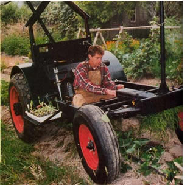
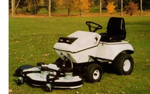
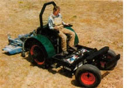
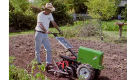

ENERGY & ENVIRONMENT
The case for solar-powered.
The world is clearly running out of oil and gas, yet most people ignore the coming crisis. Food production and distribution in the industrialized world have become so dependent on petroleum use, it's hard to imagine how agriculture will function without this fuel.
The most promising option is solar-powered electric tractors, which offer several advantages over gas diesel-powered tractors. Electric motors can operate at more than 90 percent efficiency, while combustion engines are less than 15 percent efficient. Electric propulsion is ideally suited to high torque, slow-speed agricultural operations. Electric motors have only one moving part and require little maintenance. Internal combustion engines, on the other hand, have hundreds of moving parts and require a lot of maintenance.
Electric motors don't idle, which saves energy. Plus. while the vehicle is going downhill or braking, an electric motor can become a generator and return energy to the battery. This process, called regenerative braking, further increases the efficiency of electric propulsion and cannot be duplicated using other technologies. Electric-wheel motors eliminate the need for an internal combustion engine, transmission and differential. allowing new options in the design of tractors. Mounting an electric motor in the hub creates a self-propelled wheel that can provide new levels of versatility and visibility.
If an electric tractor is combined with photovoltaic (PV) charging, whether on the tractor itself in the form of a solar panel shade canopy or on the roof of a building, no other fuel source is necessary N . Unbreakable PV panels and PV roofing that can turn any sunny surface into a power station are now available with a 20-year warranty. Photovoltaics provide an ideal energy source for agriculture because the growing season coincides with the availability of solar energy.
The biggest obstacle to the performance of most electric automobiles is battery weight. Unlike automobiles, tractors depend on weight for traction, thus heavy, deep-cycle, lead-acid batteries that are inex pensive, recyclable and long-lived can be used to great advantage in an electric tractor.
In addition to an onboard battery pack between the traction wheels, auxiliary battery packs can be loaded on the tractor's three-point hitches to balance implement weight and extend operating time. Electric linear actuators (no-maintenance screwjacks that push and pull) replace less efficient hydraulics for steering and for positioning the three-point hitches. The electric tractor can include a separate power take-off (PTO) motor that can be sized for specific needs and operate independent of ground speed.
Even now, when gas and oil are still affordable, there are many applications for a nonpolluting electric tractor powered from renewable sources. These include greenhouses and organic farms where air quality must be high; golf courses surrounded by expensive homes where noise is a concern; planting and harvesting where very slow speeds are necessary; and remote control operation where safety is important. Solar-electric tractors also have multiple applications in nonindustrialized countries, which lack fossil-fuel infrastructure and low fuel prices. The electric tractor can also replace petroleum-powered generators as a mobile power source in remote areas and in emergency applications. Because the electric tractor is made from modular components, it can be assembled in any small shop and does not require a large, energy intensive manufacturing facility.
Agriculture as practiced in the industrialized world today is far from sustainable. Eighty years of petroleum dependence has degraded Earth's life support system to the point where maintaining air, water and soil quality is no longer enough. Humanity's survival depends on regaining environmental quality. The only source of energy capable of replacing fossil fuels is the source that made them. The petroleum resource may last another 50 years, but the sun won't burn out for 5.5 billion years. Which resource do you think makes the most sense?
The Electric Ox
The Electric Ox is a towing tractor aimed primarily at greenhouse and industrial users. The Electric Ox MP (multipurpose) model adds attachments, such as a mower deck, rotary sweeper, snow thrower and dozer blade with a patented system that claims two-minute exchange times. Both models offer quiet operation and zero source emissions and are proving popular for grounds maintenance at schools, hospitals, retirement residences and high-density housing sites. The Electric Ox is also a good candidate for some postal routes, warehouses, golf courses, underground construction sites and airports.
The 790-pound tractor-no oil, gas, engines, transmissions, belts and pulleyswill turn inside an aisle 10 feet wide, will tow up to 6 tons of wheeled cargo, and is available with either a 36-volt or 48-volt battery pack. The manufacturer says the 36-volt tractor is equivalent to an 18 horsepower to 20 horsepower gas tractor and provides five hours of mowing/sweeping or 12 hours of towing at a top speed of 5 mph. The 48-volt tractor increases the overall speed and power by 30 percent and run times by 20 percent to 25 percent.
The Electric Ox models use a single pedal for acceleration and regenerative braking. Jim Laidlaw, president of Electric Tractor Corporation, says, "Regenerative braking allows us to capture and use energy that is otherwise lost during slowing or braking ... and eliminates the need for traditional mechanical brakes and the maintenance associated with them." This feature is integrated with an automatic braking system that sets a parking brake when the vehicle is motionless, the foot is off the pedal or faults occur in the control system.
Optional 900-watt or 1,500-watt inverters enable the Electric Ox to act as a silent, standalone power source for 120-volt power tools, pumps, lighting and motors at remote sites.
The 36-volt Electric Ox ($7,350, U.S. dollars) and the 48-volt unit ($8,250) include horn, gauge, hour meter, lights, onboard charger and suspension seat. Inverters are $795 (900 watts) and $995 (1,500 watts). Attachments include a 44-inch mower deck ($1,495), sweeper blade/brush ($1,150) and 48inch dozer blade ($475).
Electric Tractor Specifications
· Two 10-horsepower, variable speed wheel motors for 60 horsepower of traction
·Separate 500 to 1,000 rpm power takeoff (PTO) motor will run all standard PTO and three-point hitch implements
· Onboard five kilowatt-hour battery pack for all day light-duty applications, such as planting and harvesting.
· Standard Category 1 front and rear three-point hitches, Each use two linear actuators (1,500-pound capacity)
· Adjustable seat with controls on arm rests
· Total weight under 2,000 pounds
· 11x24-inch traction wheels
· 5 1/2 x 16-inch steering wheels
· Overall dimensions: 110-inch to 12-inch adjustable length, 87-inch height, 48-inch to 72-inch adjustable width
· Zero turning radius steering
· 20-inch ground clearance
The Heckeroth Handmade Solar Tractor
Steve Heckeroth has been building and testing solar tractor prototypes since 1992. His latest design, shown at left and below, includes the specifications in the box below and features a multiposition seat that allows the tractor to perform a multitude of operations, which otherwise only could be accomplished with several conventional machines. All the controls are mounted on the arm rests, connected only by small flexible wires to radio control transmitters.
Multiple Seat Positions Forward high position: The same as on conventional tractors but allows unobstructed visibility for operations like precision cultivation. Reverse seat position: Here the solar electric tractor can replace several other conventional machines. Loaders and forklifts are designed to put weight on the traction wheels and take weight off the steering wheels for optimum performance. High-end commercial mowers are configured to put the implement out front for visibility and maneuverability. The operation of other implements, like post-hole diggers and backhoes, can also benefit from the reverse seat operation.
Planting and harvesting: The seat can be mounted on the mid or rear three point-hitch and raised or lowered for planting and harvesting operations.
Hundreds of pounds of seedlings or harvested crop can be stored on accessible trays, and the other available three-point-hitch can be used at the same time to carry a water tank, cultivator or bed-preparation implement. Off tractor position: The relative ease of operating an electric vehicle by remote or computer control allows the seat to be removed from the tractor. This makes the electric tractor suited for repetitive agricultural operations, bomb disposal, mine sweep, toxic cleanup and some road maintenance applications.
To learn more about the potential of this brilliant tractor design, go to www.renewables.com . Somebody should buy the rights from Steve and put this baby into production. If you are seriously interested in this possibility, you can contact Steve at tractor@renewables.com Please note that Steve cannot respond to individual requests for instructions on how to build this tractor. He is now dedi cating all his time and energy to the development of photovoltaic roofing products. -MOTHER The Sun Horse
This nifty Sun Horse is a solar-charged, walk-behind electric tractor that can plow, seed, cultivate and haul. It provides plenty of power for a large garden without noise, emissions, slow starting and high maintenance. The basic unit sells for $2,250 and various attachments are available from Free Power Systems; PO. Box 1454; Longmont, Colorado 80502; www.freepowersys.com ; (303) 651-3184.
For more information, visit the Web site,
www.electrictractor.com
, call toll-free (877) 533-4333; or write Electric Tractor Corporation; 123 Snyder's Road East; Baden, Ontario N0B 1 G0.
|
 Designer Steve Heckeroth using his versatile solar-powered tractor.The adjustable shade canopy is made of PV panels that charge the tractor's batteries. |
 This may be the only riding electric tractor currently available in North America. |
 A solar-powered garden tractor. |
|
 |
|
|